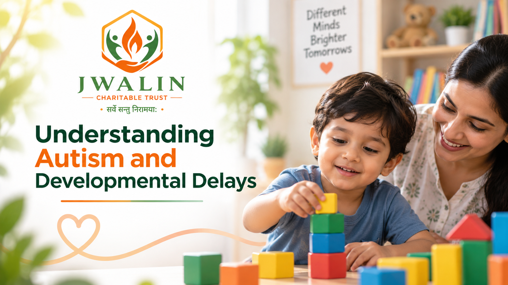

Understanding Autism and Developmental Delays
Every child grows at their own pace, but sometimes a parent senses that something feels different. Perhaps a toddler is not talking yet, or doesn't respond when called. Understanding autism and developmental delays helps families move from worry to informed action, without blame or fear.

Every child grows at their own pace, but sometimes a parent senses that something feels different. Perhaps a toddler is not talking yet, or doesn't respond when called. Understanding autism and developmental delays helps families move from worry to informed action, without blame or fear.
What Is a Developmental Delay?
A developmental delay means a child is taking longer than expected to reach milestones in areas such as movement, speech and language, thinking, or social and emotional skills. Some delays are temporary, and others continue and need long-term support. A delay may affect one area or several.
What Is Autism?
Autism, or autism spectrum disorder, is a neurodevelopmental condition. It affects how a person communicates, interacts with others and experiences the world. It is called a spectrum because it looks different in every child. Some children need significant daily support, while others need much less. Autism is not caused by parenting, and it is not a child's fault or a family's failure.
Autism vs Developmental Delay: What's the Difference?
A developmental delay describes slower progress in skills. Autism is a specific diagnosis with its own pattern of social communication differences and repetitive behaviours or interests. A child can have a developmental delay without autism, and some children have both. Only qualified professionals can tell the difference.
Early Signs of Autism and Developmental Delay
Consider a professional assessment if your child:
- Rarely responds to their name by around 12 months
- Uses few gestures, such as pointing or waving
- Avoids eye contact or shows little interest in others
- Has delayed or unusual speech, or loses words already learned
- Repeats movements or play in the same way, or is deeply upset by small changes
- Reacts strongly to sounds, textures or lights
- Is late in sitting, walking or other motor skills
- One sign alone is not a diagnosis, but a pattern deserves attention.
When Should You See a Doctor?
Speak to a paediatrician if you have concerns, and don't wait to see if your child catches up. Ask about developmental screening and referral to a developmental paediatrician, child psychologist or neurologist.
How Early Support Helps
There is no cure for autism, and support is not about changing who a child is. Speech therapy, occupational therapy, special education and parent guidance can help children build communication, learning and daily living skills. Progress differs for every child, so plans should be personalised.
What Families Can Do
- Note your child's strengths and challenges, and share them with professionals
- Keep routines predictable and communication simple
- Celebrate small steps
- Work with teachers so school supports your child's needs
From Our Journey to Every Family's Hope
Awareness and acceptance open doors to inclusion. Jwalin Charitable Trust supports children with cerebral palsy and developmental disabilities through awareness, therapy support, education and family guidance across India.
To learn more, volunteer or support a child, visit cpchildindia.org.
This article is for general awareness and is not a substitute for individual medical advice.